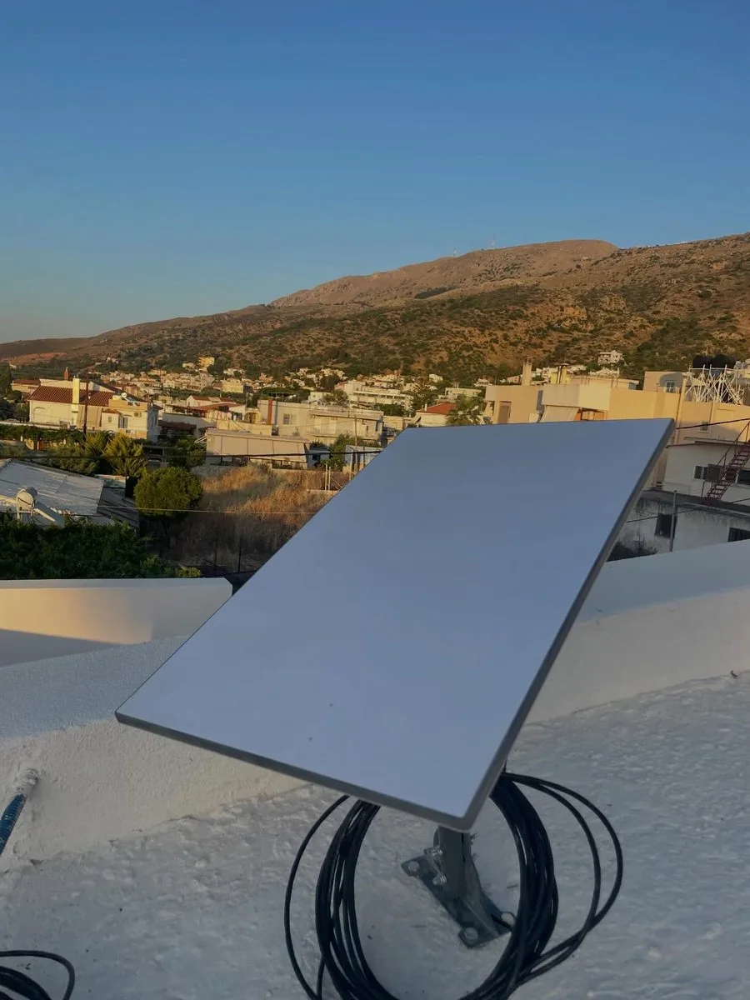
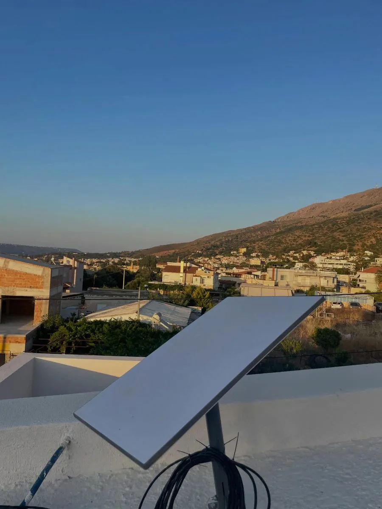
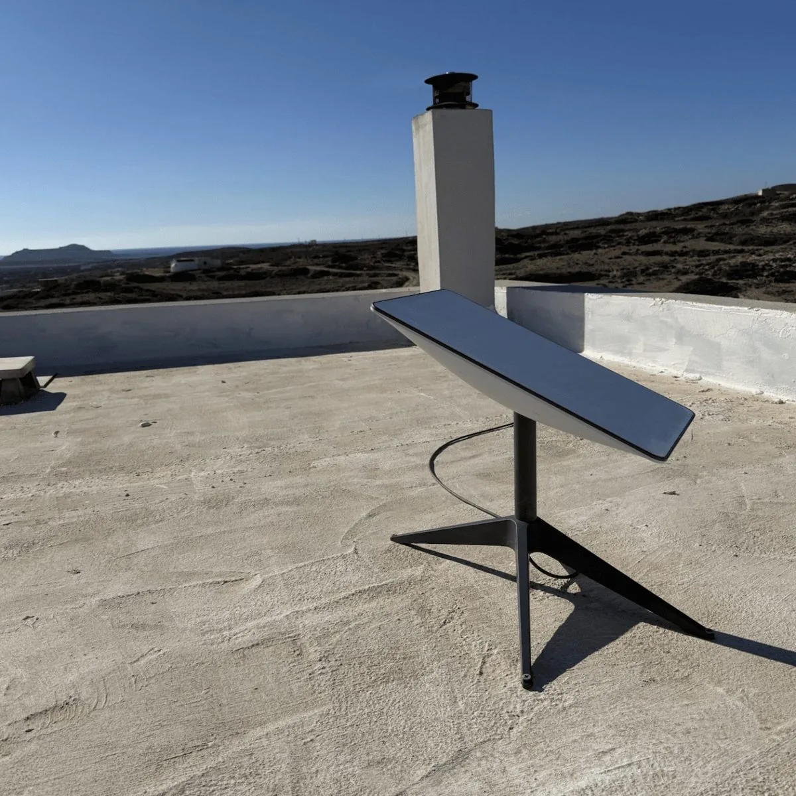
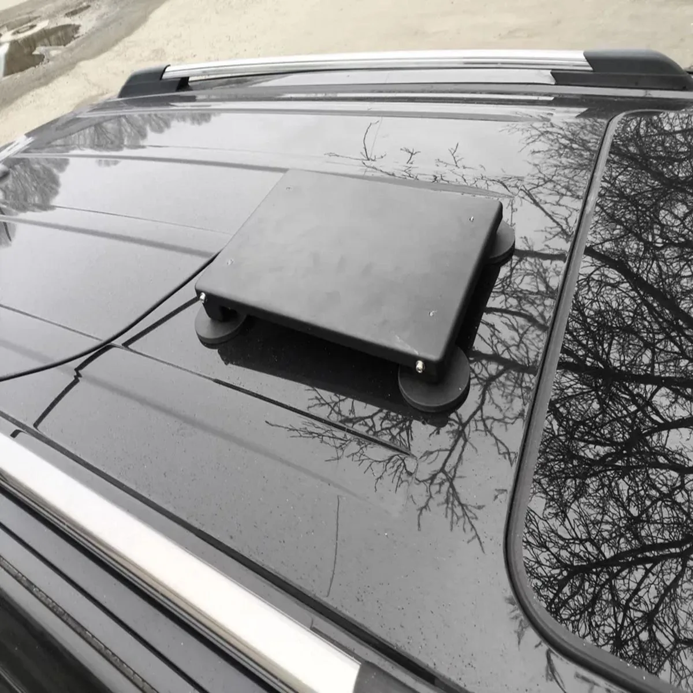
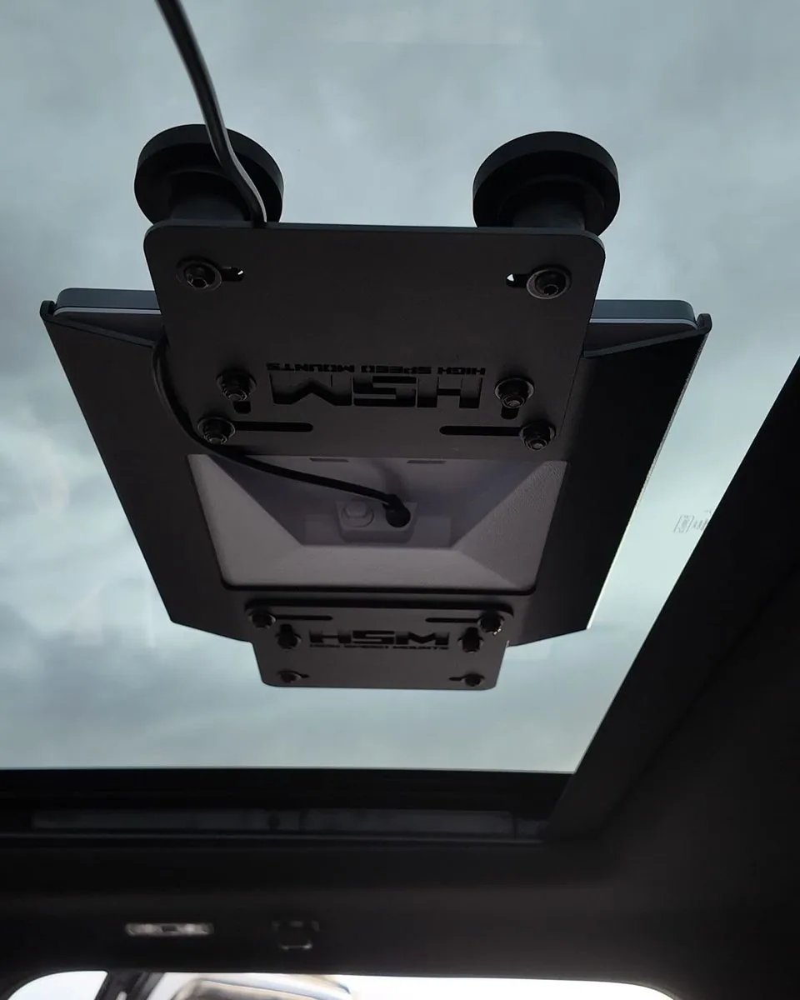

Επαγγελματική εγκατάσταση Starlink σε όλη την Κρήτη — για σπίτια, βίλες, αγροκτήματα και επιχειρήσεις όπου το σταθερό ίντερνετ είναι αργό, αναξιόπιστο ή απλώς δεν υπάρχει. Δεν τοποθετώ απλώς την κεραία: την ενσωματώνω σε ένα σωστό δίκτυο με failover, ασφάλεια και απομακρυσμένη παρακολούθηση, ώστε να έχετε σύνδεση που πραγματικά εμπιστεύεστε.
Εξυπηρετώ Ηράκλειο · Χανιά · Ρέθυμνο · Λασίθι · όλη την Κρήτη
Γιατί εμένα
Ο καθένας μπορεί να στρέψει μια κεραία στον ουρανό — η αξία είναι στο δίκτυο από πίσω. Ως πιστοποιημένος μηχανικός δικτύων και επαγγελματίας ασφάλειας, στήνω τη σύνδεση να μένει σταθερή όταν το Starlink «κολλήσει», το βάζω πίσω από σωστό firewall αντί να μείνει ανοιχτό στο internet, και λύνω τα περισσότερα θέματα απομακρυσμένα χωρίς δεύτερη επίσκεψη.
Πιστοποιημένη μηχανική δικτύων
Multi-WAN failover για να μη μένετε ποτέ εκτός
Απομακρυσμένη υποστήριξη — οι πιο πολλές λύσεις χωρίς επίσκεψη
Σε ποιους απευθύνεται
Βίλες & Αγροτουρισμός
Wi-Fi επιπέδου φιλοξενίας σε απομακρυσμένες βίλες και καταλύματα — αρκετά αξιόπιστο για πεντάστερες κριτικές, με ξεχωριστό δίκτυο επισκεπτών.
Αγροτικά Σπίτια & Κτήματα
Πραγματικό broadband εκεί που το DSL σέρνεται ή δεν φτάνει — ορεινά χωριά, ελαιώνες, εκτός δικτύου αγροτεμάχια.
Εργοτάξια & Απομακρυσμένα Γραφεία
Σύνδεση από την πρώτη μέρα σε εργοτάξια, προσωρινά γραφεία και εποχικές δραστηριότητες.
Εφεδρική Γραμμή Επιχείρησης
Αυτόματο failover στο Starlink μόλις πέσει η κύρια γραμμή — χωρίς διακοπές, χωρίς χαμένες πωλήσεις.
Πρόσφατες εγκαταστάσεις


Εγκατάσταση σε ταράτσα · Χανιά
Νέα εγκατάσταση Starlink. Απλό. Καθαρό. Αξιόπιστο. Πάντα με στόχο το καλύτερο σήμα, καθαρό φινίρισμα και ευχαριστημένο πελάτη.

Εγκατάσταση σε ταράτσα · ορίζοντας θάλασσας
Άλλη μία online. Νέα εγκατάσταση Starlink σε ταράτσα στην Κρήτη — γρήγορο internet εκεί που δεν φτάνουν τα καλώδια. Θάλασσα από τη μία, βουνά από την άλλη, και ενδιάμεσα Wi-Fi με ταχύτητα οπτικής ίνας. Χωρίς τηλεφωνική γραμμή, χωρίς σταθερή σύνδεση, κανένα πρόβλημα.

Camper · βάση στην οροφή
Ίντερνετ στον δρόμο. Το Starlink μπαίνει στην οροφή χωρίς μόνιμη επέμβαση, οπότε το όχημα μένει απείραχτο και η βάση φεύγει όποτε θες.

Όχημα · από την ηλιοροφή
Άλλο όχημα, ίδια λογική. Τίποτα δεν βιδώθηκε και τίποτα δεν τρυπήθηκε, οπότε το αμάξι κρατάει την αξία του. Μπαίνει και βγαίνει σε λίγα λεπτά.
Πραγματικές εγκαταστάσεις σε όλη την Κρήτη — φωτογραφίες από πρόσφατα έργα.
Πώς γίνεται
1
Αυτοψία χώρου
Έλεγχος εμποδίων και η καλύτερη θέση στήριξης για καθαρή θέα στον ουρανό.
2
Εγκατάσταση
Σταθερή στήριξη, στεγανοποιημένη καλωδίωση και καθαρή όδευση στο εσωτερικό.
3
Ενσωμάτωση δικτύου
Ρύθμιση router, failover, VLANs, VPN και Wi-Fi προσαρμοσμένα στον χώρο σας.
4
Συνεχής διαχείριση
Απομακρυσμένη παρακολούθηση, ενημερώσεις και υποστήριξη για να δουλεύει αδιάλειπτα.
Πακέτα
Εγκατάσταση
Εφάπαξ επαγγελματική εγκατάσταση, σωστά.
Αυτοψία χώρου & έλεγχος εμποδίων
Στήριξη & στεγανοποιημένη καλωδίωση
Ρύθμιση router & διαμόρφωση Wi-Fi
Δημοφιλές
Εγκατάσταση + Διαχείριση
Ό,τι περιλαμβάνει η Εγκατάσταση, και το κρατάμε υγιές.
Το Starlink ως ανθεκτική εφεδρεία στην κύρια γραμμή σας.
Αυτόματο failover (Starlink + σταθερή/4G)
Θωρακισμένο firewall & VPN
Παρακολούθηση & ειδοποιήσεις βάσει SLA
Ο εξοπλισμός (kit Starlink) χρεώνεται ξεχωριστά. Τελική προσφορά μετά την αυτοψία.
Ένας μήνας δωρεάν
Ένας μήνας Starlink δωρεάν
Παραγγέλνεις το Starlink μέσα από το link μου και ο πρώτος μήνας συνδρομής είναι δωρεάν. Μετράει και στις δύο περιπτώσεις: είτε έρθω εγώ να στο εγκαταστήσω, είτε το παραγγείλεις και το στήσεις μόνος σου. Σκάναρε τον κωδικό ή πάτα το κουμπί.
Η προσφορά γίνεται μέσω του προγράμματος συστάσεων της Starlink· ισχύουν οι δικοί της όροι και η διαθεσιμότητα.
Ερωτήσεις
Καλύπτετε την περιοχή μου;
Εξυπηρετώ όλη την Κρήτη — Ηράκλειο, Χανιά, Ρέθυμνο και Λασίθι, μαζί με απομακρυσμένες και ορεινές τοποθεσίες. Αν βλέπετε τον ουρανό, το Starlink συνήθως δουλεύει.
Πόσο γρήγορο και αξιόπιστο είναι;
Τυπικά 100–250 Mbps download με χαμηλό latency. Με multi-WAN failover προσθέτω δεύτερη γραμμή ώστε μια σύντομη διακοπή του Starlink να μη σας αφήνει εκτός.
Πρέπει να αγοράσω πρώτα το kit Starlink;
Μπορείτε να το αγοράσετε μόνοι σας, ή σας συμβουλεύω για το σωστό kit (Standard, Mini ή High Performance) για τον χώρο σας πριν παραγγείλετε.
Μπορείτε να το ενσωματώσετε στο υπάρχον δίκτυό μου;
Ναι — αυτό είναι το κύριο αντικείμενό μου. Δουλεύω με Cisco, MikroTik και UniFi — VLANs, VPN, δίκτυα επισκεπτών και failover είναι όλα στάνταρ.